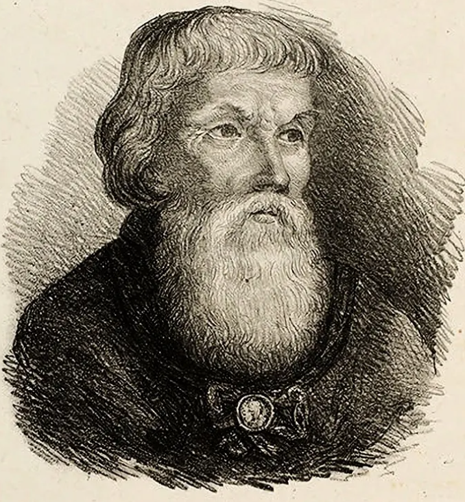
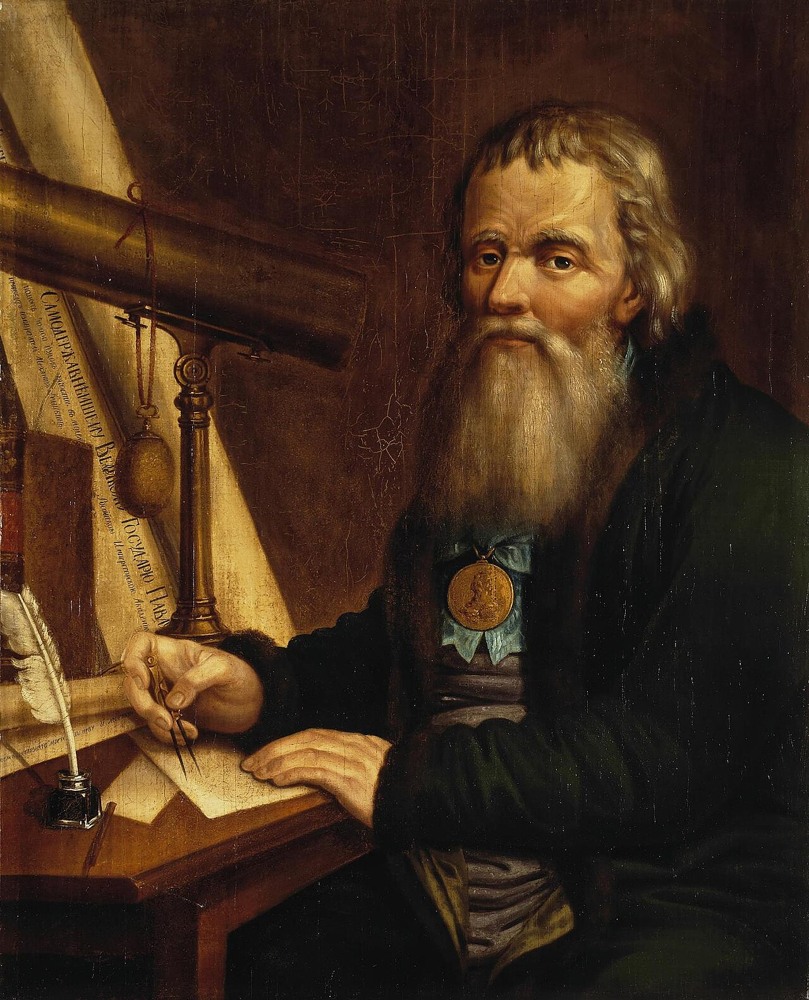

Иван КулибинИван Петрович Кулибин (1735–1818): подробная биография. Иван Петрович Кулибин — легендарный русский механик-самоучка, изобретатель, которого нередко называют «нижегородским Архимедом». Его имя стало нарицательным: сегодня «кулибиным» зовут талантливого мастера, способного придумать и собрать что-то необычное своими руками.

— Кулибин не только создавал изобретения, но и налаживал работу академической мастерской: под его руководством изготавливали станки, астрономические, физические и навигационные приборы, микроскопы, барометры, термометры, подзорные трубы, весы и другие механизмы.
— Он также ремонтировал сложные часы, например, дважды (в 1792 и 1799 годах) восстанавливал знаменитые часы «Павлин» работы Джеймса Кокса.
— Многие идеи Кулибина опередили своё время и не нашли практического применения при его жизни.